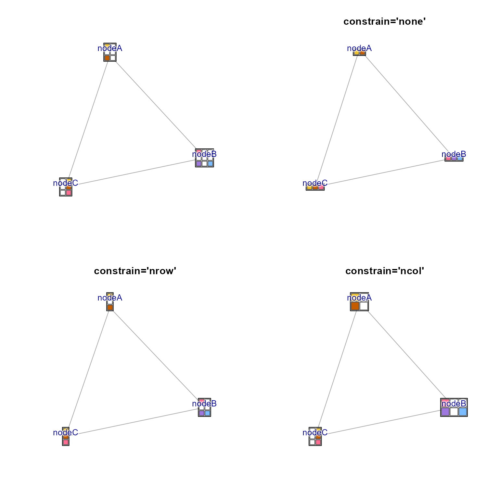

Remove igraph blank wedges
Usage
removeIgraphBlanks(
g,
blankColor = c("#FFFFFF", "#FFFFFFFF", "transparent"),
c_max = 7,
l_min = 95,
alpha_max = 0.1,
constrain = c("nrow", "ncol", "none"),
resizeNodes = TRUE,
applyToPie = TRUE,
pie_to_circle = FALSE,
pieAttrs = c("pie", "pie.value", "pie.names", "pie.color"),
verbose = FALSE,
...
)Arguments
- g
igraph object containing one or more attributes from
"pie.color"or"coloredrect.color".- blankColor
character vector of R colors directly matched to the input
xvector. The value"transparent"is useful here, because it is not easily converted to HCL color space.- c_max
maximum chroma as determined by HCL color space, in range of no color 0 to maximum color 100.
- l_min
numeric minimum luminance required for a color to be considered blank, combined with the
c_maxargument. This threshold prevents grey colors from being considered blank, unless their luminance is above this threshold.- alpha_max
numeric value indicating the alpha transparency below which a color is considered blank, in range of fully transparent 0, to fully non-transparent 1.
- constrain
character value indicating for node shape
"coloredrectangle"whether to constrain the"coloredrect.nrow"or"coloredrect.ncol"values. When"none"the nrow is usually dropped to nrow=1 whenever colors are removed.- resizeNodes
logical indicating whether to resize the resulting nodes to maintain roughly proportional size to the number of colored wedges.
- applyToPie
logical indicating whether to apply the logic to nodes with shape
"pie".- pie_to_circle
logical indicating whether node shapes for single-color nodes should be changed from
"pie"to"circle"in order to remove the small wedge line in each pie node.- pieAttrs
character vector of
vertex.attributesfromgto be adjusted whenapplyToPie=TRUE. Note that"pie.color"is required, and other attributes are only adjusted when they are present in the input graphg.- verbose
logical indicating whether to print verbose output.
- ...
additional arguments are passed to
isColorBlank().
Details
This function is intended to affect nodes with shapes "pie" or
"coloredrectangle", and evaluates the vertex attributes
"coloredrect.color" and "pie.color". For each node, any colors
considered blank are removed, along with corresponding values in
related vertex attributes, including "pie","pie.value","pie.names",
"coloredrect.names","coloredrect.nrow","coloredrect.ncol","coloredrect.byrow".
This function calls isColorBlank() to determine which colors are
blank.
This function is originally intended to follow igraph2pieGraph() which
assigns colors to pie and coloredrectangle attributes, where missing
values or values of zero are often given a "blank" color. To enhance the
resulting node coloration, these blank colors can be removed in order to
make the remaining colors more visibly distinct.
See also
Other jam igraph functions:
communities2nodegroups(),
drawEllipse(),
edge_bundle_bipartite(),
edge_bundle_nodegroups(),
fixSetLabels(),
flip_edges(),
get_bipartite_nodeset(),
highlight_edges_by_node(),
igraph2pieGraph(),
label_communities(),
mem2cnet(),
mem2emap(),
nodegroups2communities(),
rectifyPiegraph(),
subsetCnetIgraph(),
subset_igraph_components(),
sync_igraph_communities()
Examples
require(igraph);
g <- make_full_graph(n=3);
V(g)$name <- c("nodeA", "nodeB", "nodeC");
V(g)$shape <- "coloredrectangle";
V(g)$coloredrect.names <- split(
rep(c("up","no", "dn"), 7),
rep(V(g)$name, c(2,3,2)*3));
V(g)$coloredrect.byrow <- FALSE;
V(g)$coloredrect.nrow <- rep(3, 3);
V(g)$coloredrect.ncol <- c(2,3,2);
V(g)$label.degree <- pi*3/2;
V(g)$label.dist <- 3;
V(g)$size2 <- c(3, 3, 3);
color_v <- rep("white", 21);
k <- c(1, 3, 7, 9, 15, 19, 20, 21);
color_v[k] <- rep(colorjam::rainbowJam(5), length.out=length(k))
V(g)$coloredrect.color <- split(
color_v,
rep(V(g)$name, c(2,3,2)*3));
withr::with_par(list(mfrow=c(2, 2)), {
lg <- layout_nicely(g);
jam_igraph(g, layout=lg, use_shadowText=TRUE);
g2 <- removeIgraphBlanks(g, constrain="none");
V(g2)$size2 <- V(g2)$size2 / 3;
jam_igraph(g2, layout=lg, use_shadowText=TRUE,
main="constrain='none'");
g3 <- removeIgraphBlanks(g, constrain="nrow");
jam_igraph(g3, layout=lg, use_shadowText=TRUE,
main="constrain='nrow'");
g4 <- removeIgraphBlanks(g, constrain="ncol");
jam_igraph(g4, layout=lg, use_shadowText=TRUE,
main="constrain='ncol'");
})

#
g7 <- make_full_graph(n=7);
V(g7)$coloredrect.color <- lapply(c(1,2,3,4,2,3,4),
function(i){colorjam::rainbowJam(i)});
V(g7)$coloredrect.ncol <- c(1,1,1,1,2,3,4);
V(g7)$coloredrect.nrow <- c(1,2,3,4,1,1,1);
V(g7)$coloredrect.names <- V(g7)$coloredrect.color;
V(g7)$shape <- "coloredrectangle";
V(g7)$size <- 10;
V(g7)$size2 <- V(g7)$coloredrect.ncol * 1;
lg7 <- layout_nicely(g7);
jam_igraph(g7, layout=lg7,
use_shadowText=TRUE,
vertex.size2=5);